더인 교육 11일차
각각이 온도에 영향을 왜 받는지, 영향을 받는다면 왜 영향을 받는지 공부하기 · 메모리와 비메모리 반도체 · 사업특성 구분 · 스마트폰 반도체 부품 · 메모리의 층위 · SRAM (Static RAM) · DRAM (Dynamic RAM) - 117pg · DRAM Capacitor 구조 발전 · HBM · 비메모리 반도체의 변천사 · NAND vs NOR · Flash Write 동작 · Speed와 Density, 비휘발성 · Transistor · Short Channel Effect · 기술의 동향 · EDS 공정 · 반도체 스터디
1. 각각이 온도에 영향을 왜 받는지, 영향을 받는다면 왜 영향을 받는지 공부하기
(1) 문턱 전압
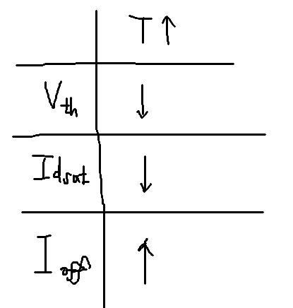
- 온도를 올리면 농도의 효과를 상쇄하는 전자-정공 쌍이 생겨서 상쇄가 된다. 그래서 진성 반도체 쪽으로 가까워진다. 불순물 농도가 낮아지기 때문에 결국 문턱 전압이 낮아진다.
- 인버전을 시킬 때 불순물이 많으면 인버전이 더 힘들다?
대상: “온도를 올리면 농도의 효과를 상쇄하는 전자-정공 쌍이 생겨서 상쇄가 된다. 그래서 진성 반도체 쪽으로 가…”
왓??
대상: “인버전을 시킬 때 불순물이 많으면 인버전이 더 힘들다?”
채널에 대한 얘기인데 불순물과 관련? 아 P type 기판에?
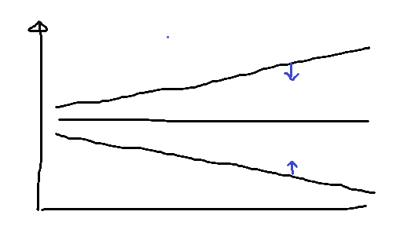
- 우리가 일반적으로 말하는 트랜지스터는 Enhancement 트랜지스터인데, Deplement 트랜지스터에 대한 얘기 하셨음. 결국 문턱전압
(2) IDsat
ID = 12 μ Cox WL (VGS − Vth)2
- Vth가 줄어들어서 IDsat이 늘어났다고 할 수도 있지만, 이동도를 보자
- 온도가 올라가면 격자 산란에 의해서 이동도가 떨어진다. 그래서 결국 온도가 올라가면 μ값이 작아져서 IDsat 값이 작아진다.
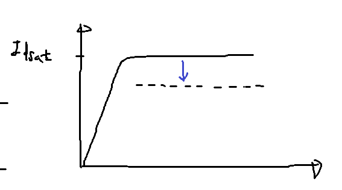
(3) Ioff
- Ioff는 온도에 영향을 안받는다.
Low VCC margin
- VCC이 마진이 있다는 것은 구동 전압 범위를 의미
2. 메모리와 비메모리 반도체
- ROM 는 Read only memory 인데, Flash에는 해당이 되지 않는다. 따라서 Flash 는 erase, program, 일고 쓰는게 되니까 원래는 아닌데 그냥 옛날 분류
- 비메모리 반도체는 그냥 로직 반도체라고 하기도 함
- DRAM 중에 모바일에 사용되지 않는 칩은 속도가 중요하다.
- DRAM 중에 모바일에 사용되는 칩은 Low power가 중요하다.
– 그래서 각각의 목적에 따라서 트랜지스터가 달라져야하고, 이는 문턱 전압을 조절해서 다르게 한다.
- NAND/NOR Flash
– 현재 NAND 를 많이 사용한다. 주르륵 배치하고, 셀도 작아서 고집적이 가능하다.
– NOR는 거의 안쓴다.
3. 사업특성 구분
- 메모리 반도체는 소품종 대량생산으로 장비를 들이고 돈이 많아야지 할 수 있다. 그래서 종합 반도체 회사에게 적절하지만 위험 부담도가 높다.
- 시스템 반도체는 설계 기술만 있으면 가능. 팹리스 회사들이 미국에 많잖아.
4. 스마트폰 반도체 부품
AP
- Exynos는 삼성전자, Snapdragon는 퀄컴 제품
- AP 칩에서 데카코어에서 “데카”는 10을 의미
- 메모리는 DRAM은 8GB/12GB, Flash는 256GB/1TB
– Tera는 10¹²
- AP 칩에는 GPU도 들어가있고 등등이 들어가 있어서 System on Chip이라고 하는 것이다.
CIS
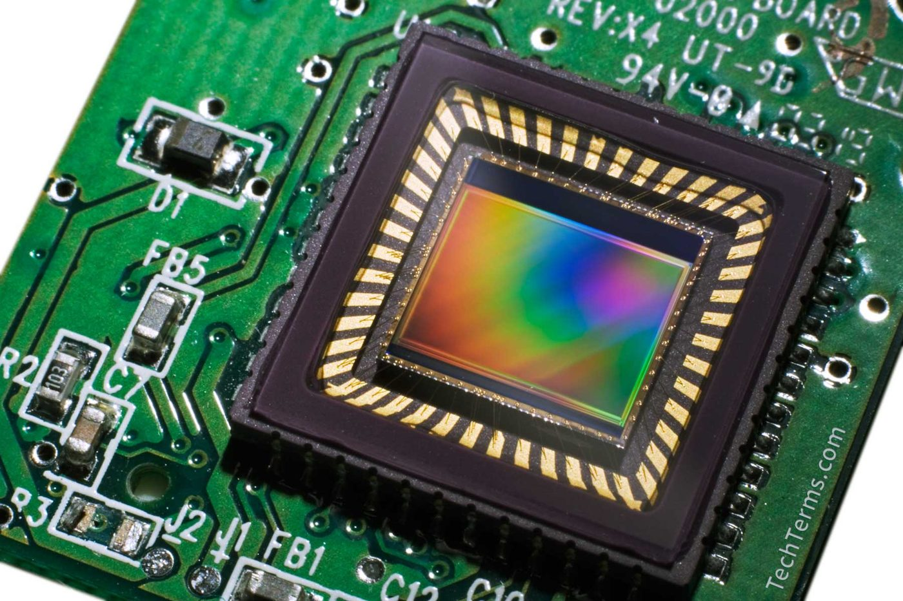
- CIS에서는 빛을 받아들여야 하기 때문에 가운데 빛을 받을 수 있는 부분이 있다. 그 부분이 픽셀로 되어 있고, Color filter가 있다. R,G,B 색상
- 빛은 아날로그 라서 이진법으로 저장할 때는 ADC. 다시 사진으로 바꿔야 하기 때문에 DAC가 필요하다.
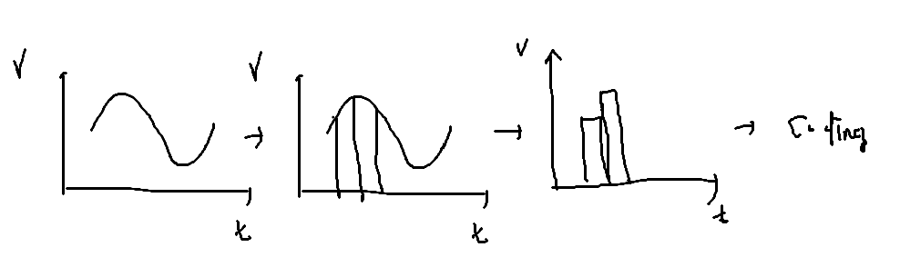
- 아날로그 신호는 연속적으로 변하는 신호가 들어오는 것을 말하고, 연속적으로 변하는 것이다. 그걸 양자화해서 쪼개고, coding을 해서 디지털 신호인 0,1 으로 데이터를 저장한다.
- 마이크로 렌즈로 잘 모아서 포토 다이오드에 저장한다.
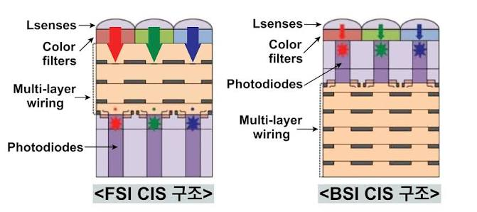
- 핸드폰에 있는건 back side에서 들어올 수 있게 해서 Metal에 반사되는 정도를 줄이려고 한다.
PMIC (Power Management Intergrated Circuit)
- 실제로 기판을 보면 PMIC가 여러개 있음
- PCB 안에 있는 칩들마다 필요한 전력, 전압이 다르기 때문에 PMIC에서 제어
- AC가 들어오면 DC로
- 고전압이 들어오면 저전압으로
- 제어도 하고
- 노이즈가 들어오면 필터링도 해주고
DDI (Display Driver IC)
- 디스플레이 구동 칩
ADC와 DAC
- 아날로그는 큰 트랜지스터를 쓰고 전압도 조금 높게 사용. 5V를 사용한다.
– 왜냐하면 작은 트랜지스터는 민감하기 때문이다.
- 5V를 10bit로 쓰겠다는 것은 1024로 나눈다는 것이니까 4.88mV 정도가 된다는 것이다.
5. 메모리의 층위
- 캐시 메모리는 속도가 엄청 빠르다. CPU와 가깝게 위치. CPU의 캐시 메모리는 보통 SRAM으로 만든다고 한다.
– 이런 SRAM의 Cell의 크기가 엄청 크다고 한다.
- DRAM이 그 다음, NAND Flash 가 그 다음
- 결국 속도와 용량은 Trade-off 관계에 있다.
6. SRAM (Static RAM)
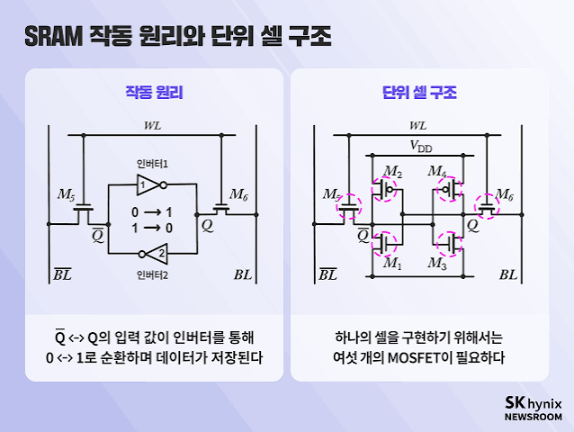
- 전원이 들어오기만 하면 0,1이 순환?
- 속도가 매우 빠르다.
- Transistor로만 구성되어 있기 때문에 Logic 공정으로 제작 가능하다.
- 하지만 Transistor 6개가 하나의 셀을 구성하기 때문에 차지하는 공간이 너무 크다.
7. DRAM (Dynamic RAM) - 117pg
(1) Refresh
- 주기적인 Refresh를 해서 Dynamic 이라고 부르는 것임.
- Refresh 동작을 진행해야한다는 점이 SRAM과의 차이가 있다. Capacitor에 저장해둔 전하가 빠져나가기 때문에 채워야한다.
- 전자 누설로 Capacitor의 충전량이 절반 이하로 줄게 되면 Data 손실이 일어난다.
– 1/2 VDD로 떨어지는 것을 데이터 손실이라고 한다.
- Read를 하고 나면 그것도 전하가 빠져나가기 때문에 Restore(충전)을 해줘야한다.
- Refresh 주기가 짧으면 전력 소비량이 늘어난다.
- Capacitance를 키우려고 하는건 전하가 빠져나가도 버틸 수 있으니까, 애초에 정전용량이 크면 1/2 VDD에 도달하는 것까지의 시간이 더 길어지니까.
(2) Write 동작
- High를 걸어주면 1이 되고, Low를 걸어주면 0이 된다?
(3) Read 동작
- Bit line에 Pre-charge → Charge-sharing → Sensing Amp → Restore
- Bit line Cap은 안에서 의도하지 않고서도 생기는 수많은 Cap을 의미한다.
각각의 과정에 대한 설명
대상: “각각의 과정에 대한 설명”
여기는 따로 천천히 이해하면서 정리해보자
Pre-charge → Charge Sharing → Sensing Amp → Restore 동작
- 위에 Pre-charge, Charge sharing 설명 적다가 말았음
(1) Pre-charge
- Bit line capacitor를 1/2 만큼 충전
123pg 예제
Vs: storage Cell Cap
Vb: Bit line Cap
- 노드가 연결되었으니까 전압은 같아지게 된다.
- Charge sharing을 하게 되면 좌측에서 우측으로 Vb = 0.5 → V = 0.6으로 바뀐다. 이걸 감지하는 것이다.
125pg
- 0.5 V보다 살짝 올라가서 0.6V, 살짝 떨어져서 0.4V 값을 가지게 되는데 그걸 확 벌려주는게 Sensing Amp Operation한다. 그리고 읽고 나서 Refresh를 진행한다.
8. DRAM Capacitor 구조 발전
- Trench type은 식각해서 채워넣는 구조였는데, Cylinder Type 세우는 구조이다. 지금은 이제 세우는 type
9. HBM
pass…
10. 비메모리 반도체의 변천사
(1) ROM
- 1 Cell에 1 Transistor 이기 때문에 SRAM이나 DRAM 보다 크기가 작을 수 밖에 없다.
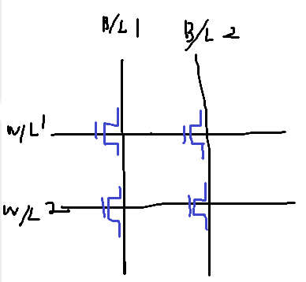
- 읽기만 가능하려면 어떻게 해야하는가? 신용카드의 읽히는 부분
- 어떨 때는 0이고 1인건데, 읽는 것 자체는 동일하다. (→ 사용되는 전압은 동일하다는 말이다)
- 그러면 원래 존재하는 트랜지스터의 상태가 달라야한다.
- Word line에 0V를 주고, 어쩌구저쩌구
- 문턱전압을 (-)로 만들어놓으면 “1”으로 읽히는 것이고, 문턱전압을 (+)을 만들어 놓으면 “0”으로 읽힌다.
– 따라서 문턱전압은 어떤 불순물을 넣을 것이냐에 따라 결정된다.
- 결국에 이러면 Read Only가 되는 것이다. 이게 비휘발성 메모리의 메커니즘이다.
- 이건 공정상에서 결정되는 것이다. 한 번 정하면 바꿀 수 없다.
(2) EPROM
- 전기적으로 프로그래밍이 가능하다.
(3) EEPROM
- 전기적으로 지우기도 하고 프로그래밍도 하는 메모리이다.
- 읽고 지울수도 있어야하기 때문에 트랜지스터가 하나 더 필요하다.
- 따라서 트랜지스터가 하나가 더 필요하다. 근데 이렇게 셀에 트랜지스터가 두 개가 되면 사이즈가 커진다.
(4) Flash Memory
- Cell 하나 Transistor 하나이고 Diffusion 영역을 통해 쭉 연결되어 있다.
- 그래서 Bit line 하나에 쭉 연결되어 있는 구조이다.
대상: “Cell 하나 Transistor 하나이고 Diffusion 영역을 통해 쭉 연결되어 있다.”
Diffusion node라는게 뭔지 모르겠어
11. NAND vs NOR
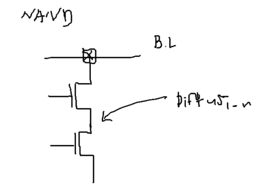
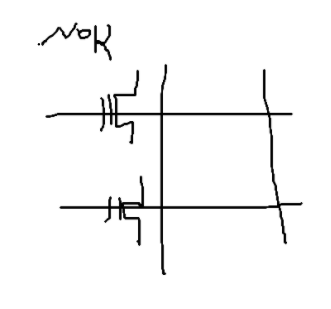
- NAND는 결국 B/L 하나에 쭉 계속 연결된 것이고, NOR는 B/L 에 쭉 연결된게 아니고 교차점에서만 만들 수 있으니까 집적도가 너무 떨어짐
12. Flash Write 동작
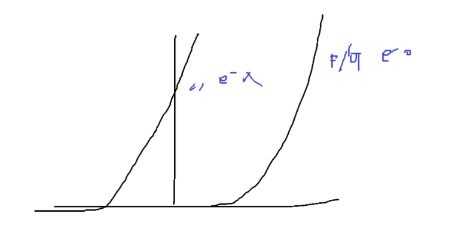
- Floating gate에 전자가 없는 걸 전압을 인가해 floating gate에 넣게되면 문턱전압이 우측이 되고, floating gate에서 빼내면 문턱전압이 좌측이 된다.
- NAND 에서 Hot carrier 방식과 FN Tunneling 방식
– Hot carrier 방식: Source에서 Drain으로 이동하는 전자가 올라가는 것
– FN Tunneling 방식: 기판에 있는 소수 전자가 올라가는 것
→ FN Tunneling 방식은 Hot carrier보다 전자가 oxide 내에 Trap 되는 정도가 적다. 따라서 Oxide 내에 Trap 되는 전자의 수가 줄어들기 때문에 수명이 더 길다. (그래서 FN Tunneling 방식을 사용한다.)
- Control gate에서 15V가 가해지는데, 이 정도면 고전압 Transistor가 필요하다.
– 이걸 뭐 P-type 기판에 농도를 조절해서 공핍영역을 늘리고, Breakdown voltage를 키워서, 고전압을 사용할 수 있게 해준다.
– 도핑 농도를 낮춘다 → 농도가 낮아지면 공핍 영역 폭이 넓어진다 → 같은 전압에서도 전기장 약해진다 → 더 높은 전압에서 견딘다.
대상: “이걸 뭐 P-type 기판에 농도를 조절해서 공핍영역을 늘리고, Breakdown voltage를 키워서…”
이걸 그래서 어디에 Source랑인지 뭔지 P-type 기판이랑 어디를?
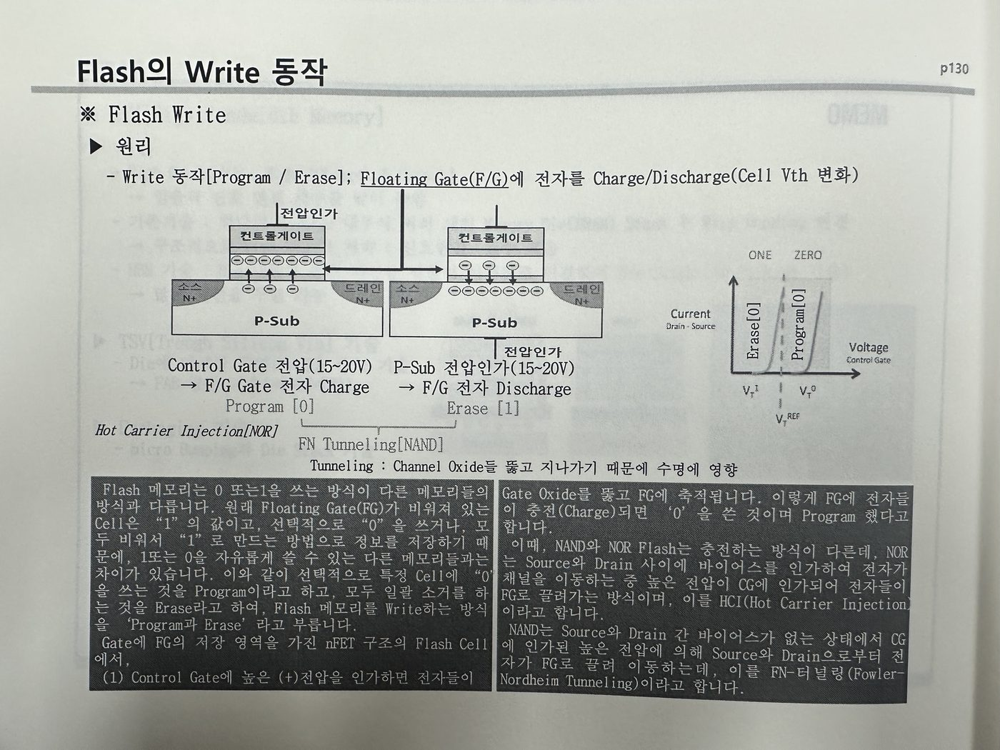
Q. NAND Flash는 특정 횟수까지만 동작 특성을 유지할 수 있는 이유?
A.
- Tunnel oxide에서 들어왔다가 나갔다는 과정에서 전자들이 왔다갔다 할텐데 Oxide 층에 Trap이 된다. Oxide에 Trap에 전자는 문턱전압을 바꿈. 원래는 Floating Gate에 들어갔을 때 전압이 바뀌는 건데 Oxide에 Trap된 전자들이 전기적인 특성을 바꾼다.
Ref) 그냥 참고하셈 계속 헷갈렸던 것
Q. 왜 맨 처음 트랜지스터만 계속 그림이 다른건가?
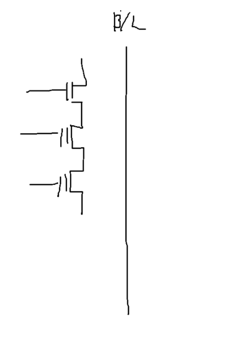
A. 맨 처음은 데이터를 저장하지 않는 일반 MOSFET이기 때문이다. 그 아래는 데이터를 저장하기 때문에 기호가 다른 것이다.
Q. 왜 NAND의 읽는 속도는 NOR보다 느린가?
A. NAND는 전부 다 거쳐오면서 읽어야 하기 때문이다.
대상: “A. NAND는 전부 다 거쳐오면서 읽어야 하기 때문이다.”
조금 더 말을 깔끔하게 정리했으면 좋겠다
Q. 전자가 빠져나가면 Vth가 줄어든다 왜 그러한가?
A. Floating gate나 charge trap 층에서 전자가 빠져나가 있으면 Vth가 줄어든다. 이는 Floating gate에 있는 전자 수가 channel에 걸리는 실제 전기장을 바꾸기 때문이다. Floating gate에 (-)가 들어가 있으면 채널에 형성되는 전자를 밀어내게 되니까 더 높은 전압을 가해야 channel 형성이 가능하다. (=반전이 된다, 문턱전압이다) 따라서 Floating gate에 전자가 빠져나가면 전압을 덜 가해줘도 되니 반전에 필요한 문턱전압이 낮아진다.
Q. NAND에서 밀도를 높이기 위해서 어떻게 했는가?
A. 평면형 NAND는 16~32bit 정도까지만 이었고 그 이상부터는 수직 적층 구조로 바뀌었다.
13. Speed와 Density, 비휘발성
- Flash 메모리의 Floating gate에 들어있는 전자는 전기가 연결되어 있지 않아도 그대로 몇년이고 있는다.
- SRAM이 엄청 빠르기 때문에 DRAM을 빠르게 만들려고 노력한다. 그 와중에 용량도 키우려고 노력하고 있다.
- 뉴메모리는 계속해서 연구되고 있다. 대부분 메모리에 사용되는 물질들을 개발하는 것임
14. Transistor
- 소자가 작아지면 short channel effect (부정적 현상) 이 생긴다.
- Transistor를 작게 한다는 것은 Gate length를 작게 하는 것이다.
– 이것에 한계에 봉착해서 Planar → FinFET → GAA
15. Short Channel Effect
대상: “Short Channel Effect”
이거 솔직히 모르잖아. 다시 공부하면서 정리하자
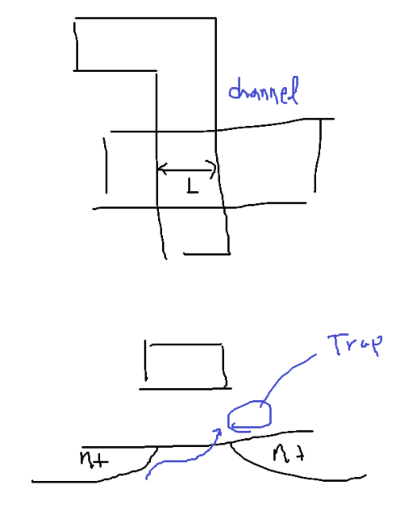
- Punch through 머시기가 나타나고 Drain leakage로 이어진다.
- Hot carrier 가 많이 발생된다.
- Side wall oxide를 만든 것은 Hot carrier가 Trap되는 것을 막기 위함이다?
- Oxide안에 전자가 Trap된다?
- LDD도 여기에서 나온 얘기
- Hallow 이온 주입, pocket 이온 주입
16. 기술의 동향
- 결국 칩을 줄이는 것에는 한계를 마주하고 packaging을 통해서 고부가가치 사업을 하고자 함.
- HBM의 TSV도 패키징 기술이라는 점.
- 이제는 OSAT 기술이 점점 중요해지고 있다.
17. EDS 공정
- Open/short 검사를 진행한다. (반도체에서는 기본 중에 기본)
- Power test
- Standby
18. 반도체 스터디
[스터디 방식]
- 30~40분 간 Deposition 공부하며 질문 5개 만들기 (되도록이면 수업 시간 범위)
- 질문 취합해서 겹치는 질문 제외 정리 -> 각자 질문 답변 준비 (10~15분간)
- 1명씩 돌아가면서 질문에 대한 답변 발표
1. PECVD에서 RF 사용이유
2. PECVD에서 freq에 따른 stress 변화 이유와 해결
3. PVD에서 E-Beam과 Thermal Evaporation 방식에 대한 설명
4. ALD에서 loading effect의 중요 이유와 무엇인지
5. void 문제점과 해결방안
6. Gapfill에서 pmd imd hdp가 각각 무엇이고 어떤 방식을 사용하는지
7. high k와 low k가 Depo에 미치는 영향
8. 어떻게 selective dielectric이 가능한가
9. Dielectric은 Device to Device (소자) 간 절연과 Layer to Layer간 절연 방식이 있습니다. 각각에 대해 어떤 방식이 있는지 설명하시오.
10. CVD 방식에서 Gas 공급 속도가 표면 반응 속도보다 빠른 구간은 교재의 Graph 에서 어디인지 설명하고 왜 해당 구간을 사용하고자 하는지 설명하시오.
11. Metal은 왜 PVD 방식으로 증착하는지 저항의 관점에서 설명하시오.
꼬리질문) 11-1. 이때 Target에 불순물을 넣는데, Al의 경우 Cu를 0.5% 넣습니다. 그 이유는 무엇인지 설명하시오.
12. HDPCVD를 사용하는 이유와 장비 메커니즘과 원리를 설명하시오.
13. ALD 방식에 대해서 설명하시오.
14. LP CVD 시 반응률을 보상하기 위해 온도를 높임. 그럼 온도를 높일수록 좋은가?
15. ALD의 self limiting 특성 원리
16. PE CVD 시 필름 스트레스를 완화하기 위해 RF mixing을 함. 필름 스트레스는 왜 생기고 RF mixing은 왜 이를 완화하는가
17. Magnetron sputtering은 어떻게 플라즈마를 가두는가? 또 플라즈마 자체를 가두면 기판에 입사하는 이온도 줄어드는게 아닌가?
18. 스퍼터링 시 질화물과 산화물 박막 형성을 위해 왜 O₂나 N₂를 첨가하는가? 직접적으로 질화물 박막이나 산화물 박막을 스퍼터링 타겟으로 사용하면 더 간단하지 않은가?